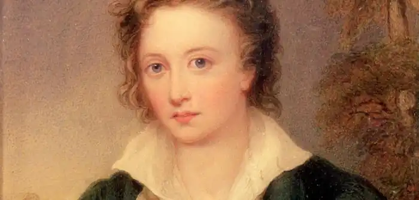
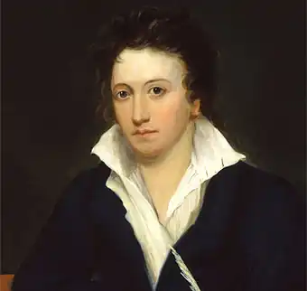
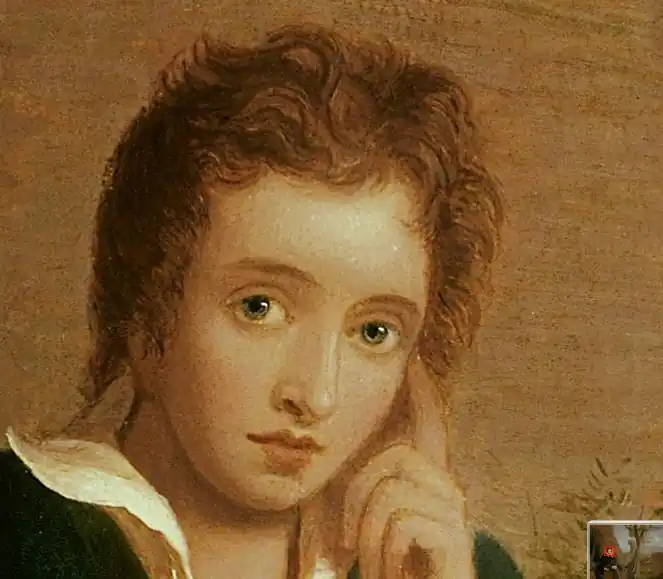

ШЕЛЛІ, Персі Біті (Shelley, Percy Bysshe — 04.08.1792, Філд-Плейс, Сассекс — 08.07.1822, поблизу Ліворно) — англійський поет.Народився в аристократичній родині, його дід був членом парламенту, а батько — власником великого маєтку, ревним прихильником монархії і англіканської церкви. Дитячі роки Шеллі провів у батьківській садибі, а коли йому виповнилося 12 років, вступив в Ітонський коледж, привілейований навчальний заклад, де здобували освіту діти аристократів. Тут Шеллі вивчав грецьку, латину, нові мови, познайомився із творами просвітників: Т. Пейна, В. Тона, В. Ґодвіна, Ж. Ж. Руссо, К. А. Гельвеція, П. А. Гольбаха. У 1810 р. вступив в Оксфордський університет, з якого у 1811 р. його виключили за написання атеїстичного памфлету "Необхідність атеїзму" ("The Necessity of Atheism", 1811). Після виключення з університету Шеллі жив у Лондоні, а в 1812 р. вирушив в Ірландію і брав участь у русі ірландського народу за визволення від влади англійського короля. У 1813 р. вийшла з друку його перша поема "Королева Ma6"("Queen Mab").
Під час перебування в Лондоні Шеллі познайомився з донькою трактирника Гаррієт Вестбрук і, намагаючись врятувати дівчину від деспотії сім'ї, взяв із нею шлюб. Це були люди зовсім різних уявлень про світ, молодята зрозуміли це доволі швидко, проте документи про офіційне розлучення Шеллі отримав лише після самогубства Гаррієт у 1817 p., поета також позбавили батьківських прав на дітей. У 1814 р. Шеллі зустрівся з Мері Ґодвін (1797—1851), донькою відомого англійського просвітника В. Ґодвіна, який був кумиром молодого поета, та англійської романістки, прибічниці жіночої емансипації Мері Волстонкрафт. "Дитя кохання й світла", — як назвав Шеллі Мері у поемі "Повстання Іслама", розділила численні труднощі, які випали на їхню долю, виховала сина, була першим коментатором і редактором творів Шеллі, увійшла в історію світової літератури як автор відомого роману "Франкенштейн, або Сучасний Прометей" (1818).
У 1816 p. подружжя Шеллі відвідало Швейцарію, у Женеві відбулася перша зустріч із Дж. Н. Г. Байроном. У 1818 p., після укладення офіційного шлюбу з Мері, подружжя Шеллі назавжди залишило Англію й оселилося в Італії. Важка хвороба не дала поетові можливості брати активну участь у суспільно-політичній діяльності. У цей період Шеллі створив свої найвідоміші твори: драму "Визволений Прометей" (1819), вірш "Англія. 1819", історичну трагедію "Ченчі" (1819), "Оду західному вітрові" (1819), "Епіпсихідіон"(1820), естетичний трактат "Захист поезії" (1820). 8 липня 1822 р. Шеллі трагічно загинув під час несподіваного шторму, пливучи на яхті з Ліворно у Віареджо. Тіло знайшли тільки через десять днів. За присутності Байрона і журналіста Лі Ханта тіло Шеллі та його супутника піддали кремації, а прах поета поховали на протестантському цвинтарі у Римі. На пам'ятнику викарбований напис: "Персі Біші Шеллі — серце сердець". Творча спадщина Шеллі, незважаючи на таке коротке життя, є напрочуд багатою і різноманітною. Передусім це позначена тематичним і жанровим розмаїттям лірика. Як поет-бунтар, борець проти будь-яких форм насильства, прибічник соціальної справедливості Шеллі постає у рядках віршів, що вирізняються політичною злободенністю і роздумами про природу влади, долі народів та становище пригноблених ("До мужів Англії", 1819; "Англія. 1819"; "Ода до захисників свободи" — "Ode to the Asserters of Liberty", 1819). Особливої слави у цьому аспекті зажив вірш "Озімандія": Я стрів мандрівника — й такі словаВін мовив: "Статуя в пісках пустиніСтоїть розбита. Поряд — головаПощерблена, й в устах її дониніНе стерся посміх владної гордині.Як видно, добре скульптору були Ті риси знані, що пережилиІ руку майстра, й серце, що до зброїТа ґвалту прагло. Нижче — кілька слів:Я — Озімандія, я цар царів,А це — діла мої. Тремтіть, герої!Навколо пустка, та руїни тінь, Та сірі рештки статуї старої,Та безконечна мертва далечінь".(Пер. В. Мисика)У віршах "Ода західному вітрові" ("Ode to the West Wind", 1819), "Вино фей" (1819), "Жайворонок" ("То a Skylark", 1820), "Хмарина" ("The Cloud", 1820), "Плач за померлим роком" (1821), "Час" (1821) Шеллі висловлює свої погляди на світ природи, який живе своїм особливим життям, насиченим постійним рухом і змінами, розмаїттям звуків і гармонією. У постійній мінливості ("Мінливість", 1821) — джерело безсмертя природного світу, а людина осмислюється поетом як один зі складників цього світу. У вічному русі та змінах природи Шеллі вбачав невичерпне джерело поетичного натхнення. Особливим було ставлення поета до античності. Які його сучасник Дж. Кітс, Шеллі вбачав у античності еталон прекрасного, основу для творення міфу, польоту фантазії. У поетичних рядках Шеллі оживає історія німфи Аретузи ("Аретуза", 1820), лунає пісня Прозерпіни ("Пісня Прозерпіни", 1820), сама природа позичає Орфеєві слова, щоби він міг скласти свою пісню ("Орфей", 1820); гімн мистецтву як силі, що перетворює світ, та його покровителеві Аполлону звучить у "Гімні Аполлона" (1820). Глибиною ліричного переживання відзначається інтимна лірика Шеллі. Ідеальна любов постає на ґрунті гармонії духу і тіла, сила кохання безмежна і для нього не існує перешкод, силі кохання ніщо і ніхто не можуть опиратися. Хрестоматійними стали вірші Шеллі "До Мері" (1818), "Філософія кохання" (1819), "На добраніч" (1820), "Епіпсихідіон" ("Epipsychidion", 1820), "До Джейн. Спомин" ("То Jane: The Recollection", 1822), "До Джейн з гітарою" (1822) та ін. Шеллі увійшов в історію світової літератури і як автор поем. "Королева Маб" — перша поема Шеллі, але вже у ній виявилася низка характерних для автора особливостей: масштабність образів, використання алегорії, емоційність поетичної мови, ораторський пафос. Автор писав про цей твір так: "Минуле, Сучасність і Майбутнє — ось величні і всеосяжні геми цієї поеми". Головна героїня поеми Іанте побачила уві сні королеву фей Маб, яка хоче задовольнити цікавість Іанте й показати їй шлях до щастя. За допомогою чарів фея розбудила душу сплячої дівчини, щоб узяти її з собою, а тоді на чарівній колісниці, витканій із веселкових барв, помчала вгору, назустріч сонцю. Іанте і Маб прибувають до палацу, розташованого у центрі Всесвіту, посеред "гірлянд незліченних світил". Маб показує Іанте на чарівному екрані грандіозні картини всієї минулої, сучасної і майбутньої історії людства. Шеллі викриває соціальну несправедливість, яка руйнує нормальні людські стосунки, звинувачує лицемірство священиків, паплюжить релігію, відкидає християнство. У поемі лунає заклик до знищення будь-яких форм деспотії: світської та духовної, європейської та східної, позаяк вони, на думку Шеллі, мало чим відрізняються одна від іншої, зазіхаючи на свободу людського духу, обмежуючи сферу творчої діяльності людини. Наклад поеми "Королева Маб" був мізерним — лише 200 примірників, відтак вона поширювалася у рукописному варіанті. Відгуки про цей твір були вельми суперечливими: демократи тріумфували, а консерватори доклали чималих зусиль для того, щоб дискредитувати, принизити автора. Але Шеллі ще не раз звертатиметься до цього улюбленого романтиками жанру. З-під його пера вийшли поеми "Повстання Іслама" ("The Revolt of Islam", 1818), "Юліан і Маддало" ("Julian and Maddalo", 1818), у якій вчувається відгомін розмов Байрона і Шеллі, "Маскарад анархії" ("The Masque of Anarchy", 1819), елегійна поема "Анадоніс" ("Adonais", 1821), присвячена трагічній загибелі Дж. Кітса. Драматичну спадщину Шеллі складають трагедія "Ченчі" ("The Стсі", 1819) і лірична драма "Визволений Прометей" ("Prometheus Unbound a Lyrical Drama", 1820).Мері Шеллі у передмові до посмертного зібрання творів Шеллі писала, що "Прометей" — душа поезії Шеллі. Підставою для такого твердження може слугувати досконалість вірша, ліричне багатство монологів, пристрасність і щирість стилю. Використовуючи міф, Шеллі суттєво переробив його, відкидаючи навіть саму можливість порозуміння між володарем богів Зевсом та Прометеем. Конфлікт між ними Шеллі трактує, передусім, як конфлікт владоможця і пригнобленого. Ідея, за яку страждає Прометей, яку він обстоює, — це ідея духовної і соціальної свободи, а тому жодного компромісу із Зевсом бути не може. Естетична програма Шеллі викладена у трактаті "Захист поезії" ("A Defence of Poetry", 1821; опубл. 1840). У цій праці Шеллі полемізує з точкою зору Т. Л. Пікока, яку той виклав у статті "Чотири віки поезії" ("The Four Ages of Poetry", 1820). Пікок висловлював думку, яку поділяли чимало його сучасників: із розвитком цивілізації поезія втрачає своє значення, вона перестає бути засобом, що впливає на формування суспільної свідомості, втрачає силу свого естетичного впливу. Подібної точки зору дотримувався і Байрон, що не раз слугувало підставою для полеміки між ним та Шеллі. Проте й у Шеллі були прибічники, передусім Кітс. Трактат починається розлогими роздумами про два види розумової діяльності. Той вид діяльності, який осяває "думки своїм власним світлом і складає із них, як із елементів, нові думки", Шеллі вважав поезією. Для неї є характерним, передусім, синтез, творчість. Поезія зорієнтована насамперед на з'ясування загальних законів, на пошук спільного, а тому сфера поетичного — це сфера уяви, а сама поезія — "втілення уяви". Витоки поезії, на думку Шеллі, сягають сивої давнини, вони закладені у самій природі мови. Віддаючи перевагу поезії перед наукою, Шеллі вбачає різницю між поетом і вченим у тому, що перший не тільки творить нове, а й розкриває "вічні відповідності сущого через образи, причетні до життя істини". Поети для Шеллі — "невизнані законодавці світу", а поезія — "це літопис найясніших і найщасливіших миттєвостей, пережитих найяснішими і найщасливішими умами", вона наділяє "безсмертям усе, що є найдорожчим і найпрекраснішим у світі", "не дає загинути хвилинам, коли на людину спадає божественне натхнення". Віра Шеллі у всемогутність поезії була дивовижною і ніколи не залишала його. А його поезія, за визначенням К. Бальмонта, "є суцільним мелодійним криком душі, якій наснився вражаючий сон про всесвітнє щастя".Українською мовою поезію Шеллі перекладали П. Грабовський, І. Франко, Юрій Клен, В. Мисик, О. Мокровольський та ін. Л. Дудова